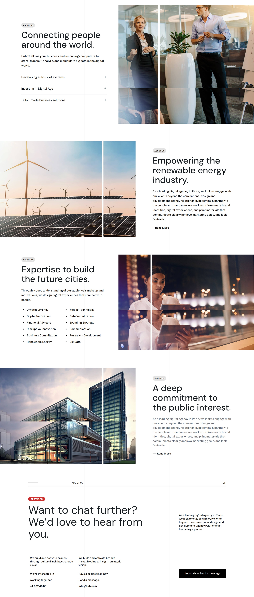
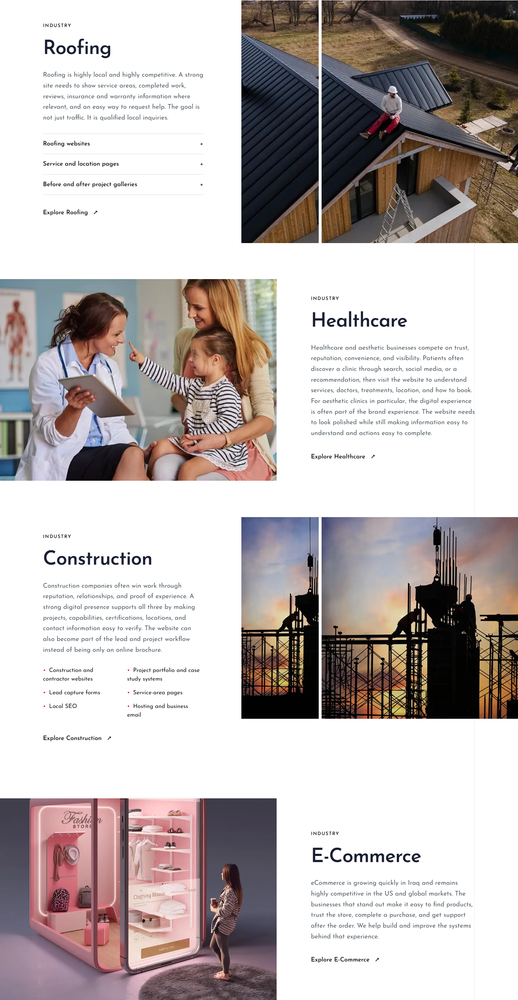


Four-layout comparison
Supplied reference — four sections and final CTA
Implementation — first four industry layouts at 1440px
Complete desktop comparison
The four-layout cycle repeats across all eleven enabled industries, so the page is longer than the four-section reference.
Binding body referenceComplete saved page — 1440px
All requested widths
Open any capture to inspect at full resolution. Tablet and mobile stack the text before the images.
Awaiting owner approval. Temporary images, inactive industry destinations and reference differences are documented in the report.